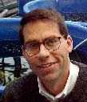

|
Home > Fellows Directory > Search Fellows
Fellows Directory
 David M. Lodge D. Phil.
Professor
University of Notre Dame
Department of Biological Sciences
P.O. Box 369
Notre Dame, IN 46556-0369
United States
Telephone: 574.631.6094
Fax: 574.631.7413
David.M.Lodge.1@nd.edu
Aldo Leopold Leadership Program Fellow as of: 1999
Research Areas
Rivers and lakes
Degree Area
Biology
Keywords
Conservation Biology, invasive species, plant-animal interactions, ecology of freshwaters
Research Habitat
Estuaries
Lakes and rivers
Education
B.S., University of the South, Sewanee, Tennessee (Summa cum Laude, with Honors), D. Phil., University of Oxford as a Rhodes Scholar
Biography
Professor David Lodge's interests in lakes, streams, and wetlands grew from his childhood fascination with the fish, crayfish, insects and other freshwater life of Georgia and Alabama where he grew up. In his current research as a freshwater ecologist, Lodge examines the many ways that human activities change the habitats that provide people with drinking water, recreation, fisheries, and valuable biodiversity. Lodge's work addresses the following situations: all over the world, many lakes that were once clear are now green with algae; in North America, many lakes have very different kinds of fish now than 100 years ago; in a northern Wisconsin study area, about 75 of the lakes have lost the native species of crayfish in the last 60 years; on the southeastern coast of the US, exploding populations of snow geese are destroying lake vegetation; and in tropical Africa, the human parasitic disease bilharzia, which is carried by freshwater snails, is increasing. All these ecological changes are being caused by increasing human use of the landscape, increasing human use of limited water supplies, or by humans moving plant and animal species from one place to another. Lodge tests possible solutions to these problems with studies in various parts of the United States, Denmark, and Kenya. Financial support for these studies has come from NSF, EPA, NOAA Sea Grant, Ducks Unlimited, and the Fulbright Commission. Following postdoctoral research and teaching at the University of Wisconsin-Madison, Lodge joined the faculty at the University of Notre Dame in 1985, where is now Professor. At Notre Dame, Lodge has taught a variety of undergraduate and graduate courses, including General Ecology and General Biology. In response to the exponential growth in biological knowledge (and the length of textbooks), Lodge and colleagues have designed innovative courses that focus on central concepts and laboratory-intensive approaches. Since 1988, Lodge has been the College of Science Director for the undergraduate Arts & Letters/Science Honors Program. Dr. Lodge's research has been covered in many newspapers (e.g., Chicago Tribune, South Bend Tribune, New York Times wire service), on several local TV news shows (in both Wisconsin and Indiana), on radio (EarthWatch Radio), in popular and scientific magazines (Audubon, Science, BioScience), and in outdoor publications (e.g., B.A.S.S. Times).
Publications
- Lodge, D. M., and K. Shrader-Frechette. 2003. Nonindigenous species: ecological explanation, environmental ethics, and public policy. Conservation Biology 17:31-37.
- Kolar, C. S., and D. M. Lodge. 2002. Ecological predictions and risk assessments for alien species. Science 298:1233-1236.
- Leung, B., D. M. Lodge, D. Finnoff, J. F. Shogren, M. Lewis, and G. Lamberti. 2002. An ounce of prevention or a pound of cure: bioecnomic risk analysis of invasive species. Proceedings: Biological Sciences (formerly Proc Royal Soc London B) 269: 2407-2413.
- Lodge, D. M. Lakes. In Global Biodiversity in a Changing Environment: Scenarios for the 21st Century, edited by F. S. Chapin III, O. E. Sala, and E. Huber-Sannwald, 277-313. New York: Springer-Verlag, 2001.
- Kolar, C., and D. M. Lodge. 2001. Progress in invasion biology: predicting invaders. Trends in Ecology and Evolution 16:199-204.
- Sala, O. E., F. S. Chapin, III, J. J. Armesto, E. Berlow, J. Bloomfield, R. Dirzo, E. Huber Sannwald, L. Huenneke, R. B. Jackson, A. Kinzig, R. Leemans, D. M. Lodge, H. A. Mooney, M. Oesterheld, N. L. Poff, M. T. Sykes, B. H. Walker, M. Walker, and D. H. Wall. 2000. Biodiversity scenarios for the year 2100. Science 287:1770-1774.
Leadership
- American Midland Naturalist, Executive Committee member, 1989-present
- Worldviews: Environment, Culture, and Religion, 2002-2003 (from contributed papers for ND conference on Ecology, Theology, and Judeo-Christian Environmental Ethics), Guest Editor
- U.S. House Committee on Science, Subcommittee on Environment, Technology & Standards, hearing on Research Priorities for Aquatic Invasive Species, Provided Congressional testimony, June 2002
- Ecological Applications, Associate Editor, 1998-2001
- Journal of the North American Benthological Society, Associate Editor, 1990-1992
- The American Midland Naturalist, Executive Committee
- Ecological Applications, Editorial board
Awards & Honors
- Aldo Leopold Leadership Program, Fellow, 1999
- Fulbright Senior Research Award (Kenya), 1998-1999
- Research on invading fish was 1 of 162 U.S. 'Science Breakthroughs' for 1998 cited in a report to Congress by the Science Coalition
- Co-author on one of 10 most cited papers in ecology published between 1987-1989 (Carpenter et al. 1987)
- Guyer Post Doctoral Fellowship, University of Wisconsin-Madison, 1983-84
- Rhodes Scholarship (Georgia, 1979), Oxford, England, 1979-1982
- Oak Ridge National Laboratory Graduate Fellowship, 1979
- Phi Beta Kappa, 1978
Links
Faculty Page
|